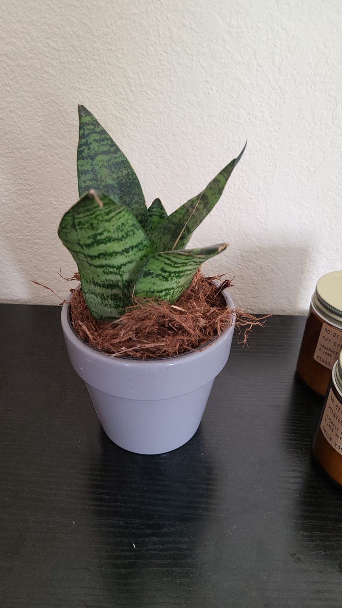

Fact Society: Op-Ed
The US Government Killed my Snake Plant
Eric Patron
July 28, 2021, 1:23p.m. ET
TORONTO, CA - Sansievieria Zeylanica, commonly known as the fan snake plant, is a sturdy species of plant from South East Asia. I own such a plant, or rather, I own the remains of one.
It began one March morning at a Home Depot in a town in California; I had cycled there to buy some wood for a personal project but ended up detouring to the plants section soon after entering the shop. I had dabbled with the though of buying a plant for my room and had done some superifical research, enough so that I knew which high-maintenance plants to stay away from.
I recognised the snake plants as they are often listed as "hard-to-kill" house plants, and I quickly selected a small one that caught my eye, happily sat in its lavendar ceramic pot.
It survived, and possibly even took pleasure (it's hard to know), in the 30 minute cycle home in my backpack.
I found a spot for it on my dresser where it remained for several months, receiving indirect sunlight and a weekly watering. What I loved about it was that, even if I forgot to water it one week, it wouldn't flinch or sulk. Even when I left it in complete darkness and without water for a week and a half while on holiday in New York, it stayed strong and saluted me with its vibrant green stripes on my return.
The true grit test came in June when I booked a three week trip to Canada to visit family and renew my work visa.
The day prior to my departure, I placed my snake plant adjacent to where the sunlight beams in from my window and gave it an extra serving of water, knowing that I was asking more of my dependent than I ever had in the past.
The following morning I locked my front door, and my snake plant and I officially parted ways, each on our short but separate journeys.
Six weeks have passed since that day and I have not returned to water my plant.
Why?
My visa renewal, which was to take five to ten business days, has over-extended itself to six weeks (29 business days) and counting. Countless emails and phone calls have produced no insight as to the status of my visa and I too am immobile, living off the indirect sunlight that the automated emails and generic reponses feed me. Futhermore, my inability to re-enter the United States has, more than likely, led to the death of my snake plant.
My plant gulped down June water not knowing that it would be the last moisture its roots would experience. It withered with no understanding of where such a drought had come from, because how could it? I think back to that June morning when we said our goodbyes, innocent in our ignorance of the fate that awaited one another. That even during my plant's demise, neither it nor I understood the forces that were affecting the lives that we were living out.
My lion-hearted, tiger-striped snake plant is another victim of the United States' inefficient immigration system. I shall not be bringing another snake plant to my room knowing the damnation it might one day suffer in my forced absence.
It began one March morning at a Home Depot in a town in California; I had cycled there to buy some wood for a personal project but ended up detouring to the plants section soon after entering the shop. I had dabbled with the though of buying a plant for my room and had done some superifical research, enough so that I knew which high-maintenance plants to stay away from.
I recognised the snake plants as they are often listed as "hard-to-kill" house plants, and I quickly selected a small one that caught my eye, happily sat in its lavendar ceramic pot.
It survived, and possibly even took pleasure (it's hard to know), in the 30 minute cycle home in my backpack.
I found a spot for it on my dresser where it remained for several months, receiving indirect sunlight and a weekly watering. What I loved about it was that, even if I forgot to water it one week, it wouldn't flinch or sulk. Even when I left it in complete darkness and without water for a week and a half while on holiday in New York, it stayed strong and saluted me with its vibrant green stripes on my return.
The true grit test came in June when I booked a three week trip to Canada to visit family and renew my work visa.
The day prior to my departure, I placed my snake plant adjacent to where the sunlight beams in from my window and gave it an extra serving of water, knowing that I was asking more of my dependent than I ever had in the past.
The following morning I locked my front door, and my snake plant and I officially parted ways, each on our short but separate journeys.
Six weeks have passed since that day and I have not returned to water my plant.
Why?
My visa renewal, which was to take five to ten business days, has over-extended itself to six weeks (29 business days) and counting. Countless emails and phone calls have produced no insight as to the status of my visa and I too am immobile, living off the indirect sunlight that the automated emails and generic reponses feed me. Futhermore, my inability to re-enter the United States has, more than likely, led to the death of my snake plant.
My plant gulped down June water not knowing that it would be the last moisture its roots would experience. It withered with no understanding of where such a drought had come from, because how could it? I think back to that June morning when we said our goodbyes, innocent in our ignorance of the fate that awaited one another. That even during my plant's demise, neither it nor I understood the forces that were affecting the lives that we were living out.
My lion-hearted, tiger-striped snake plant is another victim of the United States' inefficient immigration system. I shall not be bringing another snake plant to my room knowing the damnation it might one day suffer in my forced absence.
Eric Patron is a Canadian software engineer and ex-plant owner.
